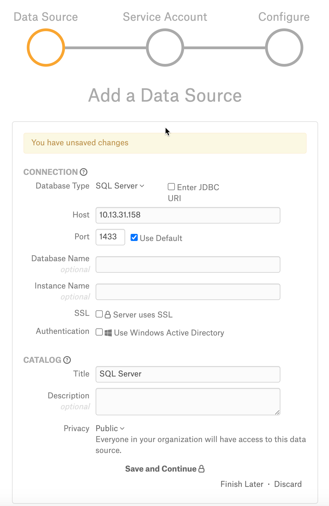

SQL Server¶
Required Information¶
To configure SQL Server in Alation, you will need the following information:
Hostname or IP address of your server
Port number
Database name - Optional
Instance name - Optional
SSL confirmation
Authentication Type confirmation (Active Directory preferred)
Realm (if using NTLM)
Server SPN (for Kerberos)
Service account with privileges listed below
Query Log Ingestion setup: Extended events
Preliminaries¶
Firewall Configuration:
Open outbound TCP port 1433 to SQL Server
SQL Server instances can listen on non-standard ports. If you connect Alation to a SQL Server instance, then open the appropriate outbound TCP ports from the Alation server.
Create Service Account¶
We recommend using an Active Directory service account. This enables Alation to read log files generated by Extended Events. A SQL Server username/password also reads log files generated by Extended Events.
Alation supports both DB based authentication and Windows authentication. For Windows authentication, SQL-Server should be configured for Kerberos, SQL-Server default, or instance SPNs must be registered with the Active Directory.
You can verify if the SQL-Server is configured for Kerberos by running the following command from a Windows CMD prompt. The command should be run on a computer in the same Realm as the SQL Server:
setspn -L [SQL-server-hostname]
Following is a sample output of setspn command showing the SPNs for
SQL-Server default instance:
The following information is required during configuration if SQL Server uses Windows Authentication:
Active Directory realm
Active Directory server IP or DNS name
Steps In Alation¶
Step 1: Add a Datasource¶
Add a new Datasource on the Sources page, refer to Adding a Data Source.
Step 2: Set up the Connection¶
JDBC URI¶
Add an SQL Server data source to Alation by filling the required and optional fields which construct the URI with the details provided or construct and provide the URI string manually.
Fill In Fields¶
To add a SQL Server data source to Alation; On the Add a Data Source screen of the wizard, specify:

In the Database Type list select SQL Server;
In the Host field, provide the hostname or IP address of your server.
In the Port field, type the port number 1433;
Provide the Database name (Optional)
Provide the Instance name (Optional)
Select SSL certificate if required.
If using Windows Active Directory for Authentication, select the Use Windows Active Directory checkbox and then select the required protocols:
NTLM
Realm
Note
From 2020.4, when you use the NTLM protocol with Active Directory authentication, Alation will pre-select a built-in jTDS driver when you go through all the steps. However, NTLM authentication for SQL Server does not work with this jTDS driver, and you must switch to the Microsoft JDBC driver on the General Settings page. See below.
Kerberos
Server SPN (Optional)
Provide the URI as a String¶
Alternatively, you can add a Data Source connection using JDBC URI. Click Enter JDBC URI and provide the JDBC URI to create a connection:
Use the required format for the JDBC URI depending on the Authentication Protocol and your database environment configuration.
NTLM¶
Microsoft Driver¶
sqlserver://<Host_Name>:<Port>;domain=<Domain_Name>;authenticationScheme=NTLM;integratedSecurity=true
Example:
sqlserver://10.13.82.165:1433;domain=al55527.test.local;authenticationScheme=NTLM;integratedSecurity=true
JTDS Driver¶
Warning
Do not use JTDS Driver and its URI if you are using Alation version 2020.4 and later. It is recommended to use the Microsoft Driver and its URI.
sqlserver://<Host_Name>:<Port>/<db_name>;domain=<Domain_Name>;useNTLMv2=true
Example:
sqlserver://10.13.47.231:1433/SQL;domain=al55527.test.local;useNTLMv2=true
Kerberos¶
sqlserver://<Host_name>:<Port>;databaseName=<name>;integratedSecurity=true;authenticationScheme=JavaKerberos
Example:
sqlserver://10.13.47.231:1433;databaseName=SQL;integratedSecurity=true;authenticationScheme=JavaKerberos’
Basic Authentication¶
sqlserver://<Host_Name>/databaseName=<db_name>;
Example:
sqlserver://10.13.47.231:1433;databaseName=SQL;
Step 3: Enter Service Account Credentials¶
Select Yes.
Provide the username and password of the service account created for Alation.
Click Save and Continue. After this step, you are navigated to the Settings page of your data source.
Step 4: Configure Your Data Source¶
Click Skip this Step. After this step, you are navigated to the Settings page of your data source.
General Settings¶
Driver for SQL Server 2017¶
Refer to Support Matrix for the certified driver version.
To see the certified JDBC driver in the drop-down list of drivers, the driver must be added to the custom_drivers path in the instance. Steps are as follows:
Download JDBC driver.
Copy the driver to the Alation instance.
ssh to the Alation instance.
Move the file to /opt/alation/alation/data1/site_data/custom_drivers/
$ sudo service alation restart
Driver to Use With NTLM Authentication¶
From release 2020.4, when you use the Add Data Source wizard screen to fill the fields and select the NTLM protocol with Active Directory authentication, Alation will later pre-select a built-in jTDS driver when you add a SQL server data source. NTLM authentication for SQL Server does not work with jTDS drivers in Alation, so you must switch to the Microsoft JDBC driver on the General Settings tab of the Settings.
Select the Microsoft JDBC driver from the list of drivers on the General Settings page and make sure the URI is in the required format: Microsoft Driver
Metadata Extraction¶
GRANT SELECT or VIEW ANY DEFINITION at Database or Schema level to alation (service account)
Synonym Extraction¶
Available from release V R7 (5.12.x)
Synonyms will be extracted if Synonym Extraction feature is enabled in Labs/Feature Configuration. Alation will extract synonyms if their parent schemas are extracted during MDE.
Table Profiles¶
GRANT SELECT at Database or Schema level to alation (service account)
Query History¶
Alation supports several methods of query ingestion for SQL Server. Select one type of query ingestion from the options below. Use Extended Events if you have SQL Server 2008 or later. Extended events are supported for SQL Server with the 2008 version onwards. For more details, refer to SQL Server documentation.
Option 1: Extended Events¶
To use this option, make sure your Alation service account has the required permissions. If the Alation service account is a local SQL Server account, it must have the sysadmin role. If an Active Directory account is used, the ‘sysadmin’ role is not required.
The SQL Server account (not the Alation service account) must have read/write access to the directory where the logs are being stored.
Query Log Ingestion using extended events is the preferred method and has less performance impact on the SQL Server system than the other methods. An extended events session is created that logs queries to files. Alation reads those files through SQL queries sent to SQL Server to ingest them. The volume of events may be high, so in the SQL to set up the extended events (provided later in the guide) it defaults to logging only a sample of the events and tries to filter out as many queries as possible that aren’t useful to Alation. We suggest starting with this and scaling back the sampling after Query Log Ingestion is configured and working with the sampled log.
Steps:¶
Grant the Alation service account VIEW SERVER STATE permission.
Why is this needed? Alation must have access to run
sys.fn_xe_file_target_read_filecommand to read the logged XEL files that extended events create. VIEW SERVER STATE is required to use that command.Grant the Alation service account permission to run the stored procedure
xp_dirtree.Why is this needed? Alation needs to read the list of logged XEL files that it is going to ingest. This stored procedure lists files in a directory.
Create and turn on an extended events session that logs queries. Depending on the SQL Server version, refer to:
You will have to change the file path to log files and may optionally change some of the other parameters like the buffer size.
When you first turn on the session, monitor it for a few hours to see that it is working and the volume of log files. If the volume is small, - only a few log files per day, - you can edit the Extended Events SQL to turn down or remove the sampling. See the comments in the SQL code.
Have an Alation Admin for your instance configure the Settings from the Alation UI to point to the files that are being logged. Ensure that you include the trailing
\at the end of the path or you will get partial_success “no logs to ingest.”
Note
If you run XEvents for SQL Server, enter the file
path in the format C:\Users\Public\Documents\ and run QLI. Use the trailing backslash at the end of the path.
Option 2: Server Side Trace¶
Alation uses Server Side Trace to capture Query History log. By default, Server Side Trace can log a lot of unwanted queries like system queries, backup or maintenance queries that can take up a lot of disk space. To limit disk usage, it is important to limit the traced queries to only the important ones that support your use case. For example:
Model queries from data analysts that can be used for reference and knowledge sharing.
Queries on a subset of DBs to compute object popularity in a DB.
If filtering doesn’t help limit the size of Query History log, Trace script can be run for a short interval anywhere from two to four hours to capture of a subset of the queries.
Refer to Appendix A.1c SQL Server Trace Script <Appendix_1c> for a sample Trace script. The script is run directly on the server.
Option 3: SQL Profiler¶
SQL Server environments with light, infrequent loads can use Client Side Profiling with SQL Profiler to capture the Query History Log. The following steps show the method to set up Query History Log using Profiler.
Launch SQL Server Profiler and create a new Template called AlationQueryLog:

Click the Events Selection tab and pick the following events:
Stored Procedures -> SP:StmtCompleted
TSQL -> SQL:StmtCompleted

3. For SP:StmtCompleted and SQL:StmtCompleted events, select the following Columns:
ApplicationName
CPU
DatabaseName
Duration
EndTime
LoginName
NTUserName
Reads
RowCounts
SPID
StartTime
TextData
Writes

4. Set Filters to log only the important queries (for example not routine maintenance queries). This step is optional. Click the Column Filters button on the Events Selection tab:
For example, to exclude queries from MaintenanceApp set ApplicationName Not Like filter to MaintenanceApp%.
Set Filters on other Columns as you see fit to limit logging to useful queries.

5. Save the template.
6. Start a Trace using the AlationQueryLog template.

7. Select Save To Table. Select Set maximum rows and define a limit based on the workload in your environment and the disk space on the server.

{kind=link}
{kind=link}
{kind=link}
{kind=link}
{kind=link}
{kind=link}
8. Observe the Trace and adjust the Column Filters as needed (after pausing the Trace).
{kind=link}
9. Set up a job to periodically copy rows from Trace Table into another Archive table where you maintain history for three or four days.
10. Provide SELECT privileges to Alation database account on the Archive Table to read Query History.
Note
Create a view from the SQL Profiler for SQL Server 2017 and enter the qualified table view name under QLI section on the General Settings page and perform QLI.
Option 4: SQL Server Audit¶
Query history information can be captured from the SQL Server Audit database.
Note
For specific details about SQL Server Audit, please refer to the SQL Server documentation for the relevant SQL Server version:
Preliminaries¶
To use SQL Server Audit for QLI in Alation:
Create a Server Audit to log query events for Alation QLI.
FILEPATHis the path to the directory to store the audit files:CREATE SERVER AUDIT test_audit TO FILE ( FILEPATH = 'C:\Users\Public\Documents\' );
Create a Database Audit Specification that defines which events to audit for Alation. Audit groups specify the type of queries to be logged:
CREATE DATABASE AUDIT SPECIFICATION test_audit_spec FOR SERVER AUDIT test_audit ADD( DATABASE_OBJECT_CHANGE_GROUP), ADD( SELECT ON DATABASE::db_name BY <role>)) WITH (STATE = ON);
Allow some time for users to query the database before performing QLI in Alation. Alation recommends to have 2 to 3 weeks of query history logs in the database for QLI to render meaningful results. Logs will be stored in the file path you have set up in the .sqlaudit format.
To list the files that currently exist in the file path, you can run the following command:
EXEC xp_dirtree 'C:\Users\Public\Documents', 0, 1;
Create a QLI View for Alation with the data from the audit files:
CREATE VIEW Alation_QLI_View AS ( SELECT application_name as ApplicationName, server_principal_sid as CPU, database_name as DatabaseName, duration_milliseconds as Duration, event_time as EndTime, server_principal_name as LoginName, server_principal_name as NTUserName, 0 as Reads, affected_rows as RowCounts, server_principal_sid as SPID, event_time as StartTime, statement as TextData, session_id as Writes, null as EventClass FROM fn_get_audit_file('C:\Users\Public\Documents\*',default,default) );
Grant SELECT privileges on the created QLI view to the Alation service account.
Configure QLI in Alation¶
When you have created the QLI view, configure QLI in Alation:
Go to the SQL Server Data Source Settings > Query Log Ingestion tab.
Clear the Use XEvents checkbox.
Note
When the Use XEvents checkbox is selected on the Query Log Ingestion tab, the Query Log Privileges section is not available on the General Settings tab.
Open the General Settings tab and under the Query Log Privileges section, provide the name of the database query history view in the format datasorcename.schema.table. For example:
Craft_Beer_Sales.dbo.Alation_QLI_View.Click Save.
Go back to the Query Log Ingestion tab. Set the QLI date range. Import the Query Logs on demand by clicking Import or set an automatic schedule.
Other Methods¶
Alation can also support ingestion from a custom table (not recommended). For information on the custom table set up, see A.1d SQL Server Ingestion from Custom Table Setup <Appendix_1d>.